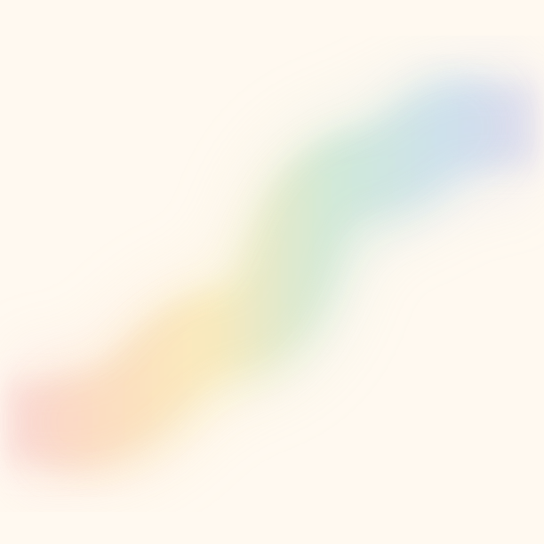
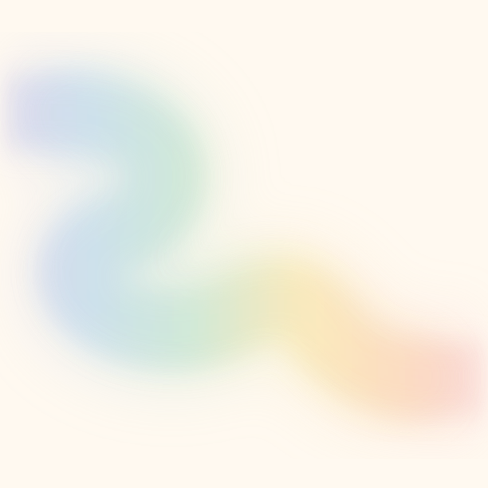

Set up directly for a 612 × 612 artframe and a left-to-right flip. The front uses a smoother rising curve; the back uses a looser double bend. Their lavender upper edge and pink lower edge still align after the card is turned over.

